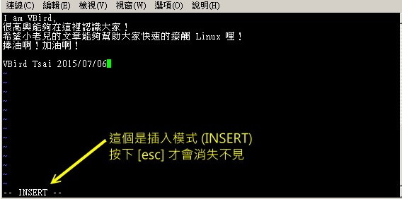

9.2 vi 的使用
基本上 vi 共分为三种模式，分别是“一般指令模式”、“编辑模式”与“命令行命令模式”。 这三种模式的作用分别是：
- 一般指令模式 （command mode）
以 vi 打开一个文件就直接进入一般指令模式了（这是默认的模式，也简称为一般模式）。在这个模式中， 你可以使用“上下左右”按键来移动光标，你可以使用“删除字符”或“删除整列”来处理文件内容， 也可以使用“复制、贴上”来处理你的文件数据。
- 编辑模式 （insert mode）
在一般指令模式中可以进行删除、复制、贴上等等的动作，但是却无法编辑文件内容的！ 要等到你按下“i, I, o, O, a, A, r, R”等任何一个字母之后才会进入编辑模式。注意了！通常在 Linux 中，按下这些按键时，在画面的左下方会出现“ INSERT 或 REPLACE ”的字样，此时才可以进行编辑。而如果要回到一般指令模式时， 则必须要按下“Esc”这个按键即可退出编辑模式。
- 命令行命令模式 （command-line mode）
在一般模式当中，输入“ : / ? ”三个中的任何一个按钮，就可以将光标移动到最下面那一列。在这个模式当中， 可以提供你“搜寻数据”的动作，而读取、存盘、大量取代字符、离开 vi 、显示行号等等的动作则是在此模式中达成的！
简单的说，我们可以将这三个模式想成下面的图示来表示：
 图9.2.1、vi三种模式的相互关系
图9.2.1、vi三种模式的相互关系
注意到上面的图示，你会发现一般指令模式可与编辑模式及命令行界面切换， 但编辑模式与命令行界面之间不可互相切换喔！这非常重要啦！闲话不多说，我们下面以一个简单的例子来进行说明吧！

Tips 过去鸟哥的前一版本中，一般指令模式被称为一般模式。但是英文版的 vi/vim 说明中，一般模式其实是“ command mode ”的意思！中文直译会变成指令模式啊！ 之所以称为指令模式，主因是我们可以在一般模式下面按下很多特殊的指令功能！例如删除、复制、区块选择等等！只是这个模式很容易跟命令行界面 （command-line） 混淆～ 所以鸟哥过去才称为一般模式而已。不过真的很容易误解啦！所以这一版开始，这一模式被鸟哥改为“一般指令模式”了！要尊重英文原文！
9.2.1 简易执行范例
如果你想要使用 vi 来创建一个名为 welcome.txt 的文件时，你可以这样做：
- 1. 使用“ vi filename ”进入一般指令模式
[dmtsai@study ~]$ /bin/vi welcome.txt
# 在 CentOS 7 当中，由于一般帐号默认 vi 已经被 vim 取代了，因此得要输入绝对路径来执行才行！
直接输入“ vi 文件名”就能够进入 vi 的一般指令模式了。不过请注意，由于一般帐号默认已经使用 vim 来取代，因此如上表所示， 如果使用一般帐号来测试，得要使用绝对路径的方式来执行 /bin/vi 才好！另外，请注意，记得 vi 后面一定要加文件名，不管该文件名存在与否！
整个画面主要分为两部份，上半部与最下面一列两者可以视为独立的。如下图 9.2.2 所示，图中那个虚线是不存在的， 鸟哥用来说明而已啦！上半部显示的是文件的实际内容，最下面一列则是状态显示列（如下图的[New File]信息），或者是命令下达列喔！
 图9.2.2、用 vi 打开一个新文件
图9.2.2、用 vi 打开一个新文件
如果你打开的文件是旧文件（已经存在的文件），则可能会出现如下的信息：
 图9.2.3、用 vi 打开一个旧文件
图9.2.3、用 vi 打开一个旧文件
如上图 9.2.3 所示，箭头所指的那个“"/etc/man_db.conf" [readonly] 131L, 5171C”代表的是“现在打开的文件名为 /etc/man_db.conf， 由于启动者的身份缘故，目前文件为只读状态，且文件内有 131 列 以及具有 5171 个字符”的意思！那一列的内容并不是在文件内，而是 vi 显示一些信息的地方喔！此时是在一般指令模式的环境下啦。接下来开始来输入吧！
- 2. 按下 i 进入编辑模式，开始编辑文字
在一般指令模式之中，只要按下 i, o, a 等字符就可以进入编辑模式了！在编辑模式当中，你可以发现在左下角状态列中会出现 –INSERT- 的字样，那就是可以输入任意字符的提示啰！这个时候，键盘上除了 [Esc] 这个按键之外，其他的按键都可以视作为一般的输入按钮了，所以你可以进行任何的编辑啰！
图9.2.4、开始用 vi 来进行编辑
- 3. 按下 [ESC] 按钮回到一般指令模式
好了，假设我已经按照上面的样式给他编辑完毕了，那么应该要如何退出呢？是的！没错！就是给他按下 [Esc] 这个按钮即可！马上你就会发现画面左下角的 – INSERT – 不见了！！
- 4. 进入命令行界面，文件储存并离开 vi 环境
OK，我们要存盘了，存盘 （write） 并离开 （quit） 的指令很简单，输入“:wq”即可存盘离开！ （注意了，按下 : 该光标就会移动到最下面一列去！） 这时你在提示字符后面输入“ ls -l ”即可看到我们刚刚创建的 welcome.txt 文件啦！整个图示有点像下面这样：
 图9.2.5、在命令行界面进行储存及离开 vi 环境
图9.2.5、在命令行界面进行储存及离开 vi 环境
如此一来，你的文件 welcome.txt 就已经创建起来啰！需要注意的是，如果你的文件权限不对，例如为 -r--r--r-- 时，那么可能会无法写入，此时可以使用“强制写入”的方式吗？可以！使用“ :wq! ” 多加一个惊叹号即可！不过，需要特别注意呦！那个是在“你的权限可以改变”的情况下才能成立的！ 关于权限的概念，请自行回去翻一下第五章的内容吧！
9.2.2 按键说明
除了上面简易范例的 i, [Esc], :wq 之外，其实 vi 还有非常多的按键可以使用喔！在介绍之前还是要再次强调， vi 的三种模式只有一般指令模式可以与编辑、命令行界面切换，编辑模式与命令行界面之间并不能切换的！ 这点在图9.2.1里面有介绍到，注意去看看喔！下面就来谈谈 vi 软件中会用到的按键功能吧！
- 第一部份：一般指令模式可用的按钮说明，光标移动、复制贴上、搜寻取代等
| 移动光标的方法 | |
|---|---|
| h 或 向左方向键（←） | 光标向左移动一个字符 |
| j 或 向下方向键（↓） | 光标向下移动一个字符 |
| k 或 向上方向键（↑） | 光标向上移动一个字符 |
| l 或 向右方向键（→） | 光标向右移动一个字符 |
| 如果你将右手放在键盘上的话，你会发现 hjkl 是排列在一起的，因此可以使用这四个按钮来移动光标。 如果想要进行多次移动的话，例如向下移动 30 列，可以使用 "30j" 或 "30↓" 的组合按键， 亦即加上想要进行的次数（数字）后，按下动作即可！ | |
| [Ctrl] + [f] | 屏幕“向下”移动一页，相当于 [Page Down]按键 （常用） |
| [Ctrl] + [b] | 屏幕“向上”移动一页，相当于 [Page Up] 按键 （常用） |
| [Ctrl] + [d] | 屏幕“向下”移动半页 |
| [Ctrl] + [u] | 屏幕“向上”移动半页 |
| + | 光标移动到非空白字符的下一列 |
| - | 光标移动到非空白字符的上一列 |
| n<space> | 那个 n 表示“数字”，例如 20 。按下数字后再按空白键，光标会向右移动这一列的 n 个字符。例如 20<space> 则光标会向后面移动 20 个字符距离。 |
| 0 或功能键[Home] | 这是数字“ 0 ”：移动到这一列的最前面字符处 （常用） |
| $ 或功能键[End] | 移动到这一列的最后面字符处（常用） |
| H | 光标移动到这个屏幕的最上方那一列的第一个字符 |
| M | 光标移动到这个屏幕的中央那一列的第一个字符 |
| L | 光标移动到这个屏幕的最下方那一列的第一个字符 |
| G | 移动到这个文件的最后一列（常用） |
| nG | n 为数字。移动到这个文件的第 n 列。例如 20G 则会移动到这个文件的第 20 列（可配合 :set nu） |
| gg | 移动到这个文件的第一列，相当于 1G 啊！ （常用） |
| n<Enter> | n 为数字。光标向下移动 n 列（常用） |
| 搜寻与取代 | |
| /word | 向光标之下寻找一个名称为 word 的字串。例如要在文件内搜寻 vbird 这个字串，就输入 /vbird 即可！ （常用） |
| ?word | 向光标之上寻找一个字串名称为 word 的字串。 |
| n | 这个 n 是英文按键。代表“<u>重复前一个搜寻的动作</u>”。举例来说， 如果刚刚我们执行 /vbird 去向下搜寻 vbird 这个字串，则按下 n 后，会向下继续搜寻下一个名称为 vbird 的字串。如果是执行 ?vbird 的话，那么按下 n 则会向上继续搜寻名称为 vbird 的字串！ |
| N | 这个 N 是英文按键。与 n 刚好相反，为“反向”进行前一个搜寻动作。 例如 /vbird 后，按下 N 则表示“向上”搜寻 vbird 。 |
| 使用 /word 配合 n 及 N 是非常有帮助的！可以让你重复的找到一些你搜寻的关键字！ | |
| :n1,n2s/word1/word2/g | n1 与 n2 为数字。在第 n1 与 n2 列之间寻找 word1 这个字串，并将该字串取代为 word2 ！举例来说，在 100 到 200 列之间搜寻 vbird 并取代为 VBIRD 则：“:100,200s/vbird/VBIRD/g”。（常用） |
| :1,$s/word1/word2/g | 从第一列到最后一列寻找 word1 字串，并将该字串取代为 word2 ！（常用） |
| :1,$s/word1/word2/gc | 从第一列到最后一列寻找 word1 字串，并将该字串取代为 word2 ！且在取代前显示提示字符给使用者确认 （confirm） 是否需要取代！（常用） |
| 删除、复制与贴上 | |
| x, X | 在一列字当中，x 为向后删除一个字符 （相当于 [del] 按键）， X 为向前删除一个字符（相当于 [backspace] 亦即是倒退键） （常用） |
| nx | n 为数字，连续向后删除 n 个字符。举例来说，我要连续删除 10 个字符， “10x”。 |
| dd | 删除光标所在的那一整列（常用） |
| ndd | n 为数字。删除光标所在的向下 n 列，例如 20dd 则是删除 20 列 （常用） |
| d1G | 删除光标所在到第一列的所有数据 |
| dG | 删除光标所在到最后一列的所有数据 |
| d$ | 删除光标所在处，到该列的最后一个字符 |
| d0 | 那个是数字的 0 ，删除光标所在处，到该列的最前面一个字符 |
| yy | 复制光标所在的那一列（常用） |
| nyy | n 为数字。复制光标所在的向下 n 列，例如 20yy 则是复制 20 列（常用） |
| y1G | 复制光标所在列到第一列的所有数据 |
| yG | 复制光标所在列到最后一列的所有数据 |
| y0 | 复制光标所在的那个字符到该列行首的所有数据 |
| y$ | 复制光标所在的那个字符到该列行尾的所有数据 |
| p, P | p 为将已复制的数据在光标下一列贴上，P 则为贴在光标上一列！ 举例来说，我目前光标在第 20 列，且已经复制了 10 列数据。则按下 p 后， 那 10 列数据会贴在原本的 20 列之后，亦即由 21 列开始贴。但如果是按下 P 呢？ 那么原本的第 20 列会被推到变成 30 列。 （常用） |
| J | 将光标所在列与下一列的数据结合成同一列 |
| c | 重复删除多个数据，例如向下删除 10 列，[ 10cj ] |
| u | 复原前一个动作。（常用） |
| [Ctrl]+r | 重做上一个动作。（常用） |
| 这个 u 与 [Ctrl]+r 是很常用的指令！一个是复原，另一个则是重做一次～ 利用这两个功能按键，你的编辑，嘿嘿！很快乐的啦！ | |
| . | 不要怀疑！这就是小数点！意思是重复前一个动作的意思。 如果你想要重复删除、重复贴上等等动作，按下小数点“.”就好了！ （常用） |
- 第二部份：一般指令模式切换到编辑模式的可用的按钮说明
| 进入插入或取代的编辑模式 | |
|---|---|
| i, I | 进入插入模式（Insert mode）：i 为“从目前光标所在处插入”， I 为“在目前所在列的第一个非空白字符处开始插入”。 （常用） |
| a, A | 进入插入模式（Insert mode）：a 为“从目前光标所在的下一个字符处开始插入”， A 为“从光标所在列的最后一个字符处开始插入”。（常用） |
| o, O | 进入插入模式（Insert mode）：这是英文字母 o 的大小写。o 为“在目前光标所在的下一列处插入新的一列”； O 为在目前光标所在处的上一列插入新的一列！（常用） |
| r, R | 进入取代模式（Replace mode）：r 只会取代光标所在的那一个字符一次；R会一直取代光标所在的文字，直到按下 ESC 为止；（常用） |
| 上面这些按键中，在 vi 画面的左下角处会出现“--INSERT--”或“--REPLACE--”的字样。 由名称就知道该动作了吧！！特别注意的是，我们上面也提过了，你想要在文件里面输入字符时， 一定要在左下角处看到 INSERT 或 REPLACE 才能输入喔！ | |
| [Esc] | 退出编辑模式，回到一般指令模式中（常用） |
- 第三部份：一般指令模式切换到命令行界面的可用按钮说明
| 命令行界面的储存、离开等指令 | |
|---|---|
| :w | 将编辑的数据写入硬盘文件中（常用） |
| :w! | 若文件属性为“只读”时，强制写入该文件。不过，到底能不能写入， 还是跟你对该文件的文件权限有关啊！ |
| :q | 离开 vi （常用） |
| :q! | 若曾修改过文件，又不想储存，使用 ! 为强制离开不储存盘案。 |
| 注意一下啊，那个惊叹号 （!） 在 vi 当中，常常具有“强制”的意思～ | |
| :wq | 储存后离开，若为 :wq! 则为强制储存后离开 （常用） |
| ZZ | 这是大写的 Z 喔！若文件没有更动，则不储存离开，若文件已经被更动过，则储存后离开！ |
| :w [filename] | 将编辑的数据储存成另一个文件（类似另存新文件） |
| :r [filename] | 在编辑的数据中，读入另一个文件的数据。亦即将 “filename” 这个文件内容加到光标所在列后面 |
| :n1,n2 w [filename] | 将 n1 到 n2 的内容储存成 filename 这个文件。 |
| :! command | 暂时离开 vi 到命令行界面下执行 command 的显示结果！例如 “:! ls /home”即可在 vi 当中察看 /home 下面以 ls 输出的文件信息！ |
| vim 环境的变更 | |
| :set nu | 显示行号，设置之后，会在每一列的字首显示该列的行号 |
| :set nonu | 与 set nu 相反，为取消行号！ |
特别注意，在 vi 中，“数字”是很有意义的！数字通常代表重复做几次的意思！ 也有可能是代表去到第几个什么什么的意思。举例来说，要删除 50 列，则是用 “50dd” 对吧！ 数字加在动作之前～那我要向下移动 20 列呢？那就是“20j”或者是“20↓”即可。
OK！会这些指令就已经很厉害了，因为常用到的指令也只有不到一半！通常 vi 的指令除了上面鸟哥注明的常用的几个外，其他是不用背的，你可以做一张简单的指令表在你的屏幕墙上， 一有疑问可以马上的查询呦！这也是当初鸟哥使用 vim 的方法啦！
9.2.3 一个案例练习
来来来！赶紧测试一下你是否已经熟悉 vi 这个指令呢？请依照下面的需求进行指令动作。 （下面的操作为使用 CentOS 7.1 中的 man_db.conf 来做练习的，该文件你可以在这里下载： http://linux.vbird.org/linux_basic/0310vi/man_db.conf。） 看看你的显示结果与鸟哥的结果是否相同啊？
- 请在 /tmp 这个目录下创建一个名为 vitest 的目录；
- 进入 vitest 这个目录当中；
- 将 /etc/man_db.conf 复制到本目录下面（或由上述的链接下载 man_db.conf 文件）；
- 使用 vi 打开本目录下的 man_db.conf 这个文件；
- 在 vi 中设置一下行号；
- 移动到第 43 列，向右移动 59 个字符，请问你看到的小括号内是哪个文字？
- 移动到第一列，并且向下搜寻一下“ gzip ”这个字串，请问他在第几列？
- 接着下来，我要将 29 到 41 列之间的“小写 man 字串”改为“大写 MAN 字串”，并且一个一个挑选是否需要修改，如何下达指令？如果在挑选过程中一直按“y”， 结果会在最后一列出现改变了几个 man 呢？
- 修改完之后，突然反悔了，要全部复原，有哪些方法？
- 我要复制 66 到 71 这 6 列的内容（含有MANDB_MAP），并且贴到最后一列之后；
- 113 到 128 列之间的开头为 # 符号的注解数据我不要了，要如何删除？
- 将这个文件另存成一个 man.test.config 的文件名；
- 去到第 25 列，并且删除 15 个字符，结果出现的第一个单字是什么？
- 在第一列新增一列，该列内容输入“I am a student...”；
- 储存后离开吧！
整个步骤可以如下显示：
- “mkdir /tmp/vitest”
- “cd /tmp/vitest”
- “cp /etc/man_db.conf .”
- “/bin/vi man_db.conf”
- “:set nu”然后你会在画面中看到左侧出现数字即为行号。
- 先按下“43G”再按下“59→”会看到“ as ”这个单字在小括号内；
- 先执行“1G”或“gg”后，直接输入“/gzip”，则会去到第 93 列才对！
- 直接下达“ :29,41s/man/MAN/gc ”即可！若一直按“y”最终会出现“在 13 列内置换 13 个字串”的说明。
- （1）简单的方法可以一直按“ u ”回复到原始状态，（2）使用不储存离开“ :q! ”之后，再重新读取一次该文件；
- “66G” 然后再“ 6yy ”之后最后一列会出现“复制6列”之类的说明字样。 按下“ G ”到最后一列，再给他“ p ”贴上6列！
- 因为 113~128 共 16 列，因此“ 113G ”→“ 16dd ”就能删除 16 列，此时你会发现光标所在 113 列的地方变成 “ # Flags. ” 开头啰
- “ :w man.test.config ”，你会发现最后一列出现 "man.test.config" [New].. 的字样。
- “25G” 之后，再给他“ 15x ”即可删除 15 个字符，出现“ tree ”的字样；
- 先“ 1G ”去到第一列，然后按下大写的“ O ”便新增一列且在插入模式；开始输入“I am a student...”后， 按下[Esc]回到一般指令模式等待后续工作；
- “:wq”
如果你的结果都可以查的到，那么 vi 的使用上面应该没有太大的问题啦！剩下的问题会是在…打字练习…。
9.2.4 vim 的暂存盘、救援回复与打开时的警告讯息
在目前主要的文书编辑软件都会有“回复”的功能，亦即当你的系统因为某些原因而导致类似死机的情况时， 还可以通过某些特别的机制来让你将之前未储存的数据“救”回来！这就是鸟哥这里所谓的“回复”功能啦！ 那么 vim 有没有回复功能呢？有的！ vim 就是通过“暂存盘”来救援的啦！
当我们在使用 vim 编辑时， vim 会在与被编辑的文件的目录下，再创建一个名为 .filename.swp 的文件。 比如说我们在上一个小节谈到的编辑 /tmp/vitest/man_db.conf 这个文件时， vim 会主动的创建 /tmp/vitest/.man_db.conf.swp 的暂存盘，你对 man_db.conf 做的动作就会被记录到这个 .man_db.conf.swp 当中喔！如果你的系统因为某些原因断线了， 导致你编辑的文件还没有储存，这个时候 .man_db.conf.swp 就能够发挥救援的功能了！我们来测试一下吧！ 下面的练习有些部分的指令我们尚未谈到，没关系，你先照着做，后续再回来了解啰！
[dmtsai@study ~]$ cd /tmp/vitest
[dmtsai@study vitest]$ vim man_db.conf
# 此时会进入到 vim 的画面，请在 vim 的一般指令模式下按下“ [ctrl]-z ”的组合键
[1]+ Stopped vim man_db.conf <==按下 [ctrl]-z 会告诉你这个讯息
当我们在 vim 的一般指令模式下按下 [ctrl]-z 的组合按键时，你的 vim 会被丢到背景去执行！ 这部份的功能我们会在第十六章的程序管理当中谈到， 你这里先知道一下即可。回到命令提示字符后，接下来我们来仿真将 vim 的工作不正常的中断吧！
[dmtsai@study vitest]$ ls -al
drwxrwxr-x. 2 dmtsai dmtsai 69 Jul 6 23:54 .
drwxrwxrwt. 17 root root 4096 Jul 6 23:53 ..
-rw-r--r--. 1 dmtsai dmtsai 4850 Jul 6 23:47 man_db.conf
-rw-r--r--. 1 dmtsai dmtsai 16384 Jul 6 23:54 .man_db.conf.swp <==就是他，暂存盘
-rw-rw-r--. 1 dmtsai dmtsai 5442 Jul 6 23:35 man.test.config
[dmtsai@study vitest]$ kill -9 %1 <==这里仿真断线停止 vim 工作
[dmtsai@study vitest]$ ls -al .man_db.conf.swp
-rw-r--r--. 1 dmtsai dmtsai 16384 Jul 6 23:54 .man_db.conf.swp <==暂存盘还是会存在！
那个 kill 可以仿真将系统的 vim 工作删除的情况，你可以假装死机了啦！ 由于 vim 的工作被不正常的中断，导致暂存盘无法借由正常流程来结束， 所以暂存盘就不会消失，而继续保留下来。此时如果你继续编辑那个 man_db.conf ，会出现什么情况呢？ 会出现如下所示的状态喔：
[dmtsai@study vitest]$ vim man_db.conf
E325: ATTENTION <==错误代码
Found a swap file by the name ".man_db.conf.swp" <==下面数列说明有暂存盘的存在
owned by: dmtsai dated: Mon Jul 6 23:54:16 2015
file name: /tmp/vitest/man_db.conf <==这个暂存盘属于哪个实际的文件？
modified: no
user name: dmtsai host name: study.centos.vbird
process ID: 31851
While opening file "man_db.conf"
dated: Mon Jul 6 23:47:21 2015
下面说明可能发生这个错误的两个主要原因与解决方案！
（1） Another program may be editing the same file. If this is the case,
be careful not to end up with two different instances of the same
file when making changes. Quit, or continue with caution.
（2） An edit session for this file crashed.
If this is the case, use ":recover" or "vim -r man_db.conf"
to recover the changes （see ":help recovery"）.
If you did this already, delete the swap file ".man_db.conf.swp"
to avoid this message.
Swap file ".man_db.conf.swp" already exists! 下面说明你可进行的动作
[O]pen Read-Only, （E）dit anyway, （R）ecover, （D）elete it, （Q）uit, （A）bort:
由于暂存盘存在的关系，因此 vim 会主动的判断你的这个文件可能有些问题，在上面的图示中 vim 提示两点主要的问题与解决方案，分别是这样的：
问题一：可能有其他人或程序同时在编辑这个文件：
由于 Linux 是多用户多任务的环境，因此很可能有很多人同时在编辑同一个文件。如果在多人共同编辑的情况下， 万一大家同时储存，那么这个文件的内容将会变的乱七八糟！为了避免这个问题，因此 vim 会出现这个警告窗口！ 解决的方法则是：
找到另外那个程序或人员，请他将该 vim 的工作结束，然后你再继续处理。
如果你只是要看该文件的内容并不会有任何修改编辑的行为，那么可以选择打开成为只读（O）文件， 亦即上述画面反白部分输入英文“ o ”即可，其实就是 [O]pen Read-Only 的选项啦！
问题二：在前一个 vim 的环境中，可能因为某些不知名原因导致 vim 中断 （crashed）：
这就是常见的不正常结束 vim 产生的后果。解决方案依据不同的情况而不同喔！常见的处理方法为：
如果你之前的 vim 处理动作尚未储存，此时你应该要按下“R”，亦即使用 （R）ecover 的项目， 此时 vim 会载入 .man_db.conf.swp 的内容，让你自己来决定要不要储存！这样就能够救回来你之前未储存的工作。 不过那个 .man_db.conf.swp 并不会在你结束 vim 后自动删除，所以你离开 vim 后还得要自行删除 .man_db.conf.swp 才能避免每次打开这个文件都会出现这样的警告！
如果你确定这个暂存盘是没有用的，那么你可以直接按下“D”删除掉这个暂存盘，亦即 （D）elete it 这个项目即可。 此时 vim 会载入 man_db.conf ，并且将旧的 .man_db.conf.swp 删除后，创建这次会使用的新的 .man_db.conf.swp 喔！
至于这个发现暂存盘警告讯息的画面中，有出现六个可用按钮，各按钮的说明如下：
[O]pen Read-Only：打开此文件成为只读文件， 可以用在你只是想要查阅该文件内容并不想要进行编辑行为时。一般来说，在上课时，如果你是登陆到同学的计算机去看他的配置文件， 结果发现其实同学他自己也在编辑时，可以使用这个模式；
（E）dit anyway：还是用正常的方式打开你要编辑的那个文件， 并不会载入暂存盘的内容。不过很容易出现两个使用者互相改变对方的文件等问题！不好不好！
（R）ecover：就是载入暂存盘的内容，用在你要救回之前未储存的工作。 不过当你救回来并且储存离开 vim 后，还是要手动自行删除那个暂存盘喔！
（D）elete it：你确定那个暂存盘是无用的！那么打开文件前会先将这个暂存盘删除！ 这个动作其实是比较常做的！因为你可能不确定这个暂存盘是怎么来的，所以就删除掉他吧！哈哈！
（Q）uit：按下 q 就离开 vim ，不会进行任何动作回到命令提示字符。
（A）bort：忽略这个编辑行为，感觉上与 quit 非常类似！ 也会送你回到命令提示字符就是啰！